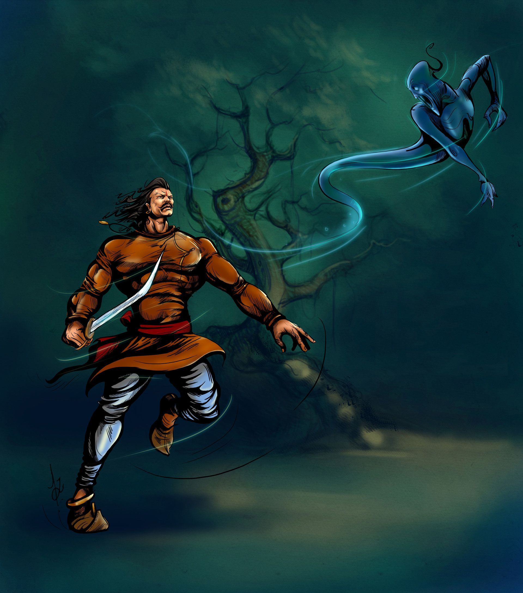

|
 |
"ફરીથી, થોડા સમય પછી, છોકરીના પિતા પર આનંદનો પ્રસંગ ઊભો થયો, અને તેથી તેઓને (કન્યા અને વરરાજાને) પણ આમંત્રણ આવ્યું. પત્ની અને પતિ તૈયાર થયા, અને તેમના મિત્રને તેમની સાથે લઈ, તે માટે નીકળ્યા. જ્યારે તેઓ સ્થળની નજીક પહોંચ્યા, ત્યારે દેવીનું મંદિર નજરમાં આવ્યું, અને પછી તેની પ્રતિજ્ઞા તેના મગજમાં આવી, ત્યારે તેણે ચિંતન કર્યું અને પોતાની જાતને કહ્યું, 'હું એક મહાન જૂઠો છું, અને ખૂબ જ અધાર્મિક છું, દેવીને જૂઠું બોલ્યા છે. અને પત્નીને કહ્યું, 'તું પણ અહીં જ રહેજે.' આટલું કહીને અને મંદિરમાં ગયો, તેણે પૂલમાં સ્નાન કર્યું, દેવી સમક્ષ ગયો, પ્રાર્થનામાં હાથ જોડ્યા, તેણીને આદરપૂર્વક સંબોધન કર્યું, અને તલવાર ઉભી કરી અને ગરદન પર પ્રહાર કર્યો. તેનું માથું "તેના શરીરથી અલગ થઈ ગયું, અને જમીન પર પડ્યો." ટૂંકમાં કહીએ તો, થોડો વિલંબ થયા પછી, તેના મિત્રએ વિચાર્યું કે તે ઘણો સમય ગયો હતો અને હજી પાછો આવ્યો નથી, તેથી તેણે જઈને જોવું જોઈએ (શું થયું હતું); તેથી તેણે પત્નીને કહ્યું, 'અહીં જ રહો. હું ટૂંક સમયમાં જ તેને શોધીને અહીં લાવીશ.' આટલું કહીને તે દેવીના મંદિરમાં ગયો, અને જુઓ, તેનું (મિત્રનું) માથું તેના શરીરથી અલગ પડેલું હતું! ત્યાં આ સ્થિતિ જોઈને તે પોતાની જાતને કહેવા લાગ્યો કે, 'દુનિયા કઠિન જગ્યા છે ! કોઈ એવું ધારશે નહીં કે તેણે, પોતાના હાથે, દેવીને પોતાનું માથું અર્પણ કર્યું; તેનાથી વિપરિત, તેઓ કહેશે કે, તેની પત્ની ખૂબ જ સુંદર હતી, તે (મિત્ર), તેણીને કબજે કરવા માટે. ,તેને મારી નાખ્યો અને આ યુક્તિ આચરે છે.તેથી અહીં મરવું વધુ સારું છે,જ્યારે દુનિયામાં ખરાબ પ્રતિષ્ઠા મેળવવી એ હિતાવહ નથી.' આટલું કહીને, તેણે કુંડમાં સ્નાન કર્યું, દેવીની હાજરીમાં આવી, હાથ જોડીને પ્રણામ કર્યા, અને તલવાર ઉપાડીને, ગરદન પર પ્રહાર કર્યો, જેથી તેનું માથું તેના શરીરથી અલગ થઈ ગયું. અને તે, ત્યાં એકલા ઊભા રહીને કંટાળી ગયેલી, અને તે એકદમ નિરાશ થઈ ત્યાં સુધી તેઓના પાછા આવવાની રાહ જોતી રહી, દેવીના મંદિરમાં તેમની શોધમાં ગઈ. ત્યાં પહોંચી, તે બે મૃત હાલતમાં પડેલા સિવાય શું જુએ છે! પછી, બંનેને મૃત જોઈને, તેણીએ મનમાં વિચાર્યું, 'લોકો માનશે નહીં કે આ બંનેએ સ્વેચ્છાએ દેવીને બલિદાન આપ્યું છે. દરેક જણ કહેશે કે વિધવા એક અવિચારી દુ: ખી હતી, (અને) તેણીએ તે બંનેને મારી નાખ્યા અને તેમને છોડી દીધા જેથી તેણી તેના દુષ્ટતામાં સામેલ થઈ શકે. આવી બદનામી સહન કરતાં મરવું સારું.' આ રીતે પ્રતિબિંબિત કર્યા પછી, તેણીએ પૂલમાં ડૂબકી લગાવી (અને સ્નાન કર્યું), અને દેવીની હાજરીમાં આવીને, તેણીનું માથું પ્રણામ કર્યું; (પછી) તલવાર ઉપાડીને, ગરદન પર પ્રહાર કરવા જતી હતી, ત્યારે દેવી સિંહાસન પરથી નીચે ઉતરી, અને આવીને તેનો હાથ પકડીને કહ્યું, 'દીકરી! એક વરદાન પૂછો; હું તમારાથી પ્રસન્ન છું.' આના પર તેણે કહ્યું, 'મા! જો તમે મારાથી પ્રસન્ન છો, તો આ બંનેને જીવિત કરો.' ત્યારે દેવીએ કહ્યું, 'તેમના માથાને તેમના શરીર સાથે જોડી દો.' તેણીના આનંદના ગડગડાટમાં તેણીએ તેમને પહેરવામાં માથું બદલી નાખ્યું. અને દેવીએ જીવનનું પાણી લાવીને તેમના પર છાંટ્યું. બંને જીવતા ઉભા થયા, અને એક બીજા સાથે વિવાદ કરવા લાગ્યા; એક કહેવત, 'તે મારી v\dfe છે ;' બીજી, 'તે મારી છે.' આટલી બધી વાર્તા સંભળાવીને સ્પ્રાઉટે કહ્યું, "હવે રાજા વિક્રમજીત! આ બેમાંથી તે કોની પત્ની છે?" કિલગે કહ્યું, "સાંભળો! આનો માર્ગદર્શક સિદ્ધાંત કાયદાના પુસ્તકમાં આ રીતે આપવામાં આવ્યો છે, આ રીતે: ' નદીઓમાં ગંગા શ્રેષ્ઠ છે, અને સુમેરુ પર્વતોમાં શ્રેષ્ઠ છે, અને કલ્પવૃક્ષ વૃક્ષોમાં સૌથી શ્રેષ્ઠ છે, (અને) શરીરના તમામ અવયવોમાં માથું સર્વોચ્ચ છે. આ ચુકાદા મુજબ તે તેની પત્ની બને છે જેની પાસે શ્રેષ્ઠ સભ્ય હોય છે.' " આ શબ્દો સાંભળીને સ્પ્રાઈટ ગયો અને ફરીથી તે ઝાડ પર લટક્યો ; અને રાજાએ જઈને તેને બાંધ્યો અને તેને પોતાના ખભા પર બેસાડીને લઈ ગયો. |
| પેજ નંબર ૨૧ | ||